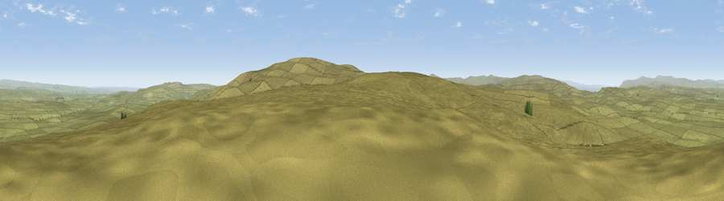

Viewpoint c10133_7829
#8072 in England · top 16% of its area beats it · — · open accessWhere it is
The exact computed spot (NY 91475 06675). Click the marker for map links.
Public access: this spot lies on mapped open-access land (CRoW Act 2000) — you may roam here on foot. Computed from Natural England's CRoW access layer and OpenStreetMap rights of way — not the legal definitive map. Always verify locally.
The view, rendered

A 360° render of this exact spot computed from the terrain model, tree cover and land cover — summer colours, afternoon light, calibrated against photographs of famous viewpoints. Real trees, hedges and buildings will differ in detail.
The panorama
Grey silhouette: terrain skyline in each direction (720 bearings, Earth curvature and refraction included). Dashed green: skyline with trees (+15 m) and buildings (+8 m) as obstacles. Blue strip: how far the ground is visible on each bearing.
Where the view opens
Wedge length = distance to the farthest visible ground on that bearing (vegetation-aware). Rings at 10, 25 and 50 km.
What fills the view
99% grassland
Angular shares of the visible panorama (visual magnitude), not map area. Landscape diversity 0.03 (0–1 Shannon).
Key numbers
More beautiful places nearby
The staircase of upgrades: each row has a higher view potential than everything closer. Driving times are estimates from straight-line distance, calibrated against real road routing — check an actual route before setting out.
| Place | Direction | Drive | Score |
|---|---|---|---|
| Viewpoint c10092_7857 | SE · 3 km | ~6 min | 69.5 |
| Viewpoint c10143_7703 | W · 6 km | ~13 min | 72.1 |
| Viewpoint c10212_7709 | WNW · 7 km | ~15 min | 73.4 |
| Great Shunner Fell | SW · 11 km | ~21 min | 74.4 |
| Viewpoint near Nateby | WSW · 11 km | ~22 min | 75.0 |
| Viewpoint c10024_7603 | WSW · 13 km | ~23 min | 76.9 |
| Calders | WSW · 27 km | ~43 min | 79.0 |
| Whernside | SW · 30 km | ~48 min | 79.9 |
54.45539, -2.13300 · source: screening · position refined by local search. Computed location — check access rights before visiting.